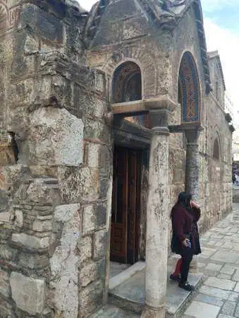
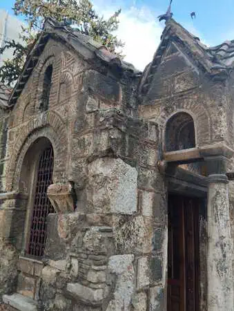

<!DOCTYPE html>
<html lang="es"></html>


<head>


<title>Dia 6</title>
<meta name="keywords" content="Atenas, Viajes, Grecia">
 <meta name="author" content="Antía" >
 <meta name="description" content="Pagina sobre el viaje a Grecia">
 <meta charset="utf-8">
 <link rel="icon" href="img/favicon-32x32.png" type="image/png">
 <link rel="stylesheet" href="estilosdias.css">
</head>
<body>
    <nav>
        <ul>
        
            <li><a href="index.html">Portada</a> </li>
            <li><a href="Dia1.html">Día 1</a> </li>
            <li><a href="Dia2.html">Día 2</a> </li>
            <li><a href="Dia3.html">Día 3</a> </li>
            <li><a href="Dia4.html">Día 4</a> </li>
            <li><a href="Dia5.html">Día 5</a> </li>
            <li><a href="Dia6.html">Día 6</a> </li>
            <li><a href="Dia7y8.html">Días 7 y 8</a> </li>
        </ul>
    </nav>
<h1>Día 6 (el grupo se divide)</h1>
<article>
    <p>Este día comenzó con la típica rutina,desayuno y prepararse;
        la diferencia fue que tuvimos que recoger nuestras maletas 
        y bolsas pues los grupos que se quedaban se iban a quedar en 
        otro hotel; dejamos las maletas en la recepción del hotel 
        original  y  el primer grupo cogio el bus para ir al aeropuerto
        , tras esto fuimos a comer al mismo hotel del dia anterior.
    </p>
</article>
<article>
   <div class="foto_derecha">
     <p>Una vez habíamos terminado fuimos a dar una vuelta por el 
        centro(no podíamos hacer el cambio de hotel hasta la tarde)
         una última vez, fuimos por la misma ruta que habíamos hecho 
         el día anterior .
         
    </p>
    
    
   </div>
</article>
<article>
    <p>Cuando regresamos cogimos nuestras maletas y bolsas para ir al 
        nuevo hotel,fuimos a nuestras habitaciones y a cenar, nos
         comentaron quien iba en cada uno de los grupos del dia 
         siguiente y el plan para volver, un grupo saldría de 
         Atenas al mediodía y se quedaría esperando en Madrid a
          que el segundo grupo llegase para coger el bus juntos y 
          llegar a Galiza a las 7 de la mañana.

    </p>
</article>

<article>
    <p>Este día marcó el viaje pues el grupo se separó por primera vez,
         sin contar eso, el día transcurrió sin demasiada novedad,
         se podría decir que es el día de relleno.

    </p>
</article>


</body>